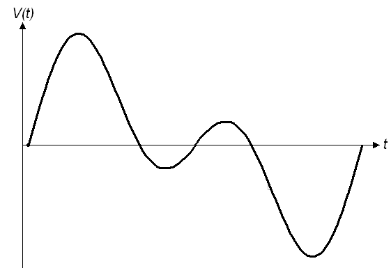

Robotic Arts Intro Fall 2018 (IA277.01)
- Instructor: Lucas Haroldsen (lharoldsen@mica.edu)
- Class Site: yasunaga.work/raif18
- syllabus: syllabus.pdf
- Resources: links.html
09/21: more listening --- [Serial Communication and Analog input]

Review
- Coding Structure
- Digital signals
- digitalRead and digitalWrite
- variables
- if statement
- AND and OR
Today, we will go over together:
- Arduino reference page here!
- Analog input
- Serial Communication --> Serial Monitor and Serial Plotter
- Using potentiometer, photocells, conductive foam
- Setting a threshhold for your sensor
- Combining conditional logic to detect ranges(||, &&)
- Analog switches
- Fritzing
Presentaton
Interactive materiality by Augustina Andreoletti
Neoprene bend sensor by plusea article
Doug Engelbart's presentation at the Fall Joint Computer Conference in San Francisco, December 9, 1968 titled "A Research Center for Augmenting Human Intellect."
Céleste Boursier
Printer Shake by Joe Winter
HOMEWORK
Analog Switch
By creating thresholds and looking for specific ranges, we can use the data from a single analog input to control digital signals, almost like several digital inputs.
For homework, I would like you to build off of today's sketch using two analog inputs.
Trigger a pattern of digital output using the number of digital output of your choice.
Analog inputs can be the same or different. Create as many thresholds as you like.
-
Here are some examples:
- Trigger a LED pattern when SensorA and SensorB are both in the range you specified at the same time
- Trigger a LED pattern when SensorA is in range and trigger another kind of pattern when sensorB is in range
- Trigger a LED1 when SensorA is in range and trigger LED2 when the sensorB is in range
-
Steps:
- Familiarize yourself with reading analog inputs
(Potentiomenter/Photocell/Piezo/variable resistors/or other analog sensors of your choice) - Use the Serial monitor to see what values are coming from your analog sensor
- Decide which ranges of values of your analog sensor will trigger different patterns of digital outputs
Document
- Fritzing drawing or photo of your drawng (schimatic) of your work
- arduino sketch .ino file
Upload documents to google doc in folder named "AnalogInput"